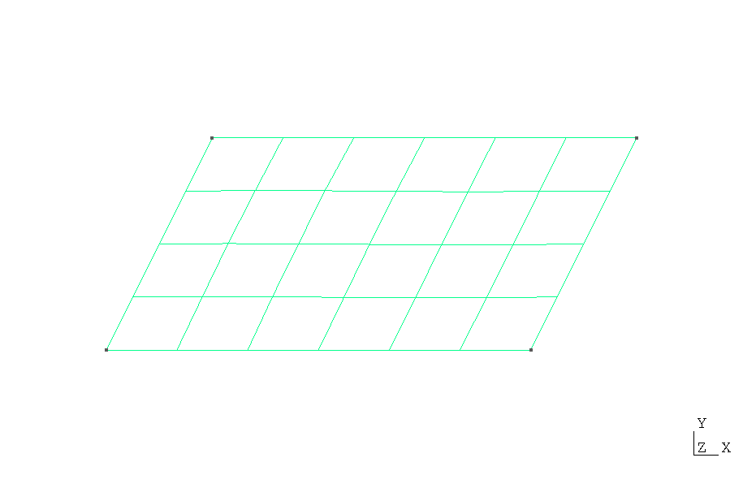

Overview
Heat Conduction in a 2D Rhomboid Fin Tutorial (Gmsh Mesh)
This page demonstrates solving the 2D heat conduction fin problem using a Gmsh-generated mesh. It is a
variation of the rectangular fin tutorial, but applied
to a rhomboidal domain.
Gmsh
 is a powerful mesh generation tool that can create complex geometries and meshes for finite element
analysis. For the mathematical formulation and theory, see the
basic tutorial.
is a powerful mesh generation tool that can create complex geometries and meshes for finite element
analysis. For the mathematical formulation and theory, see the
basic tutorial.
Gmsh File Import
This example demonstrates how to import a Gmsh-generated mesh (.msh file format) and solve
a heat conduction problem.
<body>
<!-- ...body region... -->
<script type="module">
// Import FEAScript library
import { FEAScriptModel, importGmshMesh, plotInterpolatedSolution, printVersion } from "https://core.feascript.com/dist/feascript.esm.js";
window.addEventListener("DOMContentLoaded", async () => {
// Print FEAScript version in the console
printVersion();
// Fetch the mesh file
const response = await fetch("./rhom_quad.msh"); // .msh version 4.1 is currently supported
if (!response.ok) {
throw new Error(`Failed to load mesh file: ${response.status} ${response.statusText}`);
}
const meshContent = await response.text();
// Create a File object with the actual content
const meshFile = new File([meshContent], "rhom_quad.msh");
// Create and configure model
const model = new FEAScriptModel();
model.setModelConfig("heatConductionScript");
// Parse the mesh file
const rhom_quad = await importGmshMesh(meshFile);
// Define mesh configuration with the parsed rhom_quad
model.setMeshConfig({
parsedMesh: rhom_quad,
meshDimension: "2D",
elementOrder: "quadratic",
});
// Apply boundary conditions using Gmsh physical group tags
model.addBoundaryCondition("0", ["constantTemp", 200]); // Bottom boundary
model.addBoundaryCondition("1", ["constantTemp", 200]); // Right boundary
model.addBoundaryCondition("2", ["convection", 1, 20]); // Top boundary
model.addBoundaryCondition("3", ["symmetry"]); // Left boundary
// Solve
model.setSolverMethod("lusolve");
const result = model.solve();
// Plot results
plotInterpolatedSolution(model, result, "contour", "resultsCanvas");
});
</script>
<!-- ... rest of body region... -->
</body>
For details on the Gmsh workflow, physical groups, and boundary condition mapping, please refer to the rectangular fin tutorial.
Example Gmsh .geo File
Below is the rhom.geo file used in this tutorial. It defines a 4 m × 2 m rectangular domain
with physical lines for each boundary edge:
// 2D Rhomboid: 4m (base width) x 2m (height)
lc = 0.7; // Characteristic length
dx = 1.0; // Horizontal skew amount (controls rhomboid angle)
// Points (x, y, z, mesh size)
Point(1) = {0, 0, 0, lc}; // Bottom left
Point(2) = {4, 0, 0, lc}; // Bottom right
Point(3) = {4+dx, 2, 0, lc}; // Top right (shifted)
Point(4) = {dx, 2, 0, lc}; // Top left (shifted)
// Lines
Line(1) = {1, 2}; // bottom
Line(2) = {2, 3}; // right
Line(3) = {3, 4}; // top
Line(4) = {4, 1}; // left
// Line Loop and Surface
Line Loop(1) = {1, 2, 3, 4};
Plane Surface(1) = {1};
// Physical Lines
Physical Line("bottom") = {1};
Physical Line("right") = {2};
Physical Line("top") = {3};
Physical Line("left") = {4};
// Physical Surface
Physical Surface("domain") = {1};
// Generate 2D mesh
Recombine Surface{1}; // Turn triangle elements into quadrilaterals
Mesh.ElementOrder = 2; // Set quadratic elements
Mesh 2;
To generate a mesh file from this .geo script, you would run:
gmsh rhom.geo -2 in your terminal.
Generated Mesh
Below is a visualization of the quadrilateral mesh generated with Gmsh. The mesh consists of 24 elements.

Quadrilateral mesh (rhom_quad.msh) generated using the
rhom.geo script with Gmsh
Results
Below is the 2D contour plot of the computed temperature distribution. This plot is generated in real time using FEAScript.